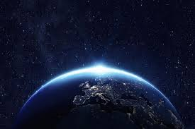

Planeta która jest naszym domem, ziemia

Ziemia to niezwykła planeta, pełna życia i różnorodnych krajobrazów, na której wszystko wydaje się być w ciągłym ruchu. Góry wznoszą się dumnie ku niebu, a rzeki płyną nieprzerwanie, przecinając doliny i lasy, niosąc ze sobą historię tysiącleci. Lasy, zarówno tropikalne jak i borealne, szumią w rytmie wiatru i deszczu, a na pustyniach słońce maluje złote piaski, które falują pod wpływem ciepłego powietrza. W oceanach życie tętni w najróżniejszych formach – od mikroskopijnych organizmów unoszących się w wodzie, po majestatyczne wieloryby i setki gatunków ryb, które poruszają się w olbrzymich ławicach niczym żywe obrazy w ruchu. Atmosfera otula planetę, chroniąc przed chłodem kosmosu, a chmury przynoszą deszcz, który odżywia ziemię i pozwala roślinom rozkwitać. Każdy dzień i każda noc przynosi zmiany – słońce wschodzi i zachodzi, a księżyc, czasem pełny, czasem ledwie widoczny, oświetla nocne niebo. Wiosną ziemia budzi się do życia, a w powietrzu unosi się zapach świeżych kwiatów i mokrej ziemi; latem pola dojrzewają pod ciepłem słońca, a wiatr niesie ze sobą dźwięki owadów i ptaków. Jesień maluje liście w ciepłe kolory, a zimą śnieg pokrywa świat białym puchem, cicho zamieniając znane krajobrazy w coś niemal magicznego. Ludzie i zwierzęta dostosowują się do tych zmian, a wszystkie ekosystemy współistnieją, czasem w harmonii, czasem w niełatwej równowadze. Ziemia to także miejsce nieustannych przemian. Wulkaniczne wybuchy przypominają o sile wnętrza planety, trzęsienia ziemi poruszają fundamenty, a powodzie i huragany pokazują, że natura ma własne prawa. Jednocześnie życie nieustannie odnajduje drogę – rośliny kiełkują w szczelinach skał, zwierzęta migrują szukając pożywienia, a ludzie uczą się, jak współżyć z tym złożonym światem, budując miasta, uprawiając ziemię i starając się rozumieć otaczającą rzeczywistość. Patrząc z perspektywy kosmosu, Ziemia jest niezwykle piękna – błękitne oceany, zielone lądy i białe lodowce tworzą obraz harmonii i życia. Jednocześnie widać jej delikatność – zanieczyszczenie, wylesianie, zmiany klimatu przypominają, że każdy ruch na tej planecie ma znaczenie. To, co sprawia, że Ziemia jest wyjątkowa, to właśnie jej zdolność do utrzymania życia w najróżniejszych formach i jej nieustanna przemiana – od miliardów lat, i zapewne jeszcze przez wiele kolejnych.